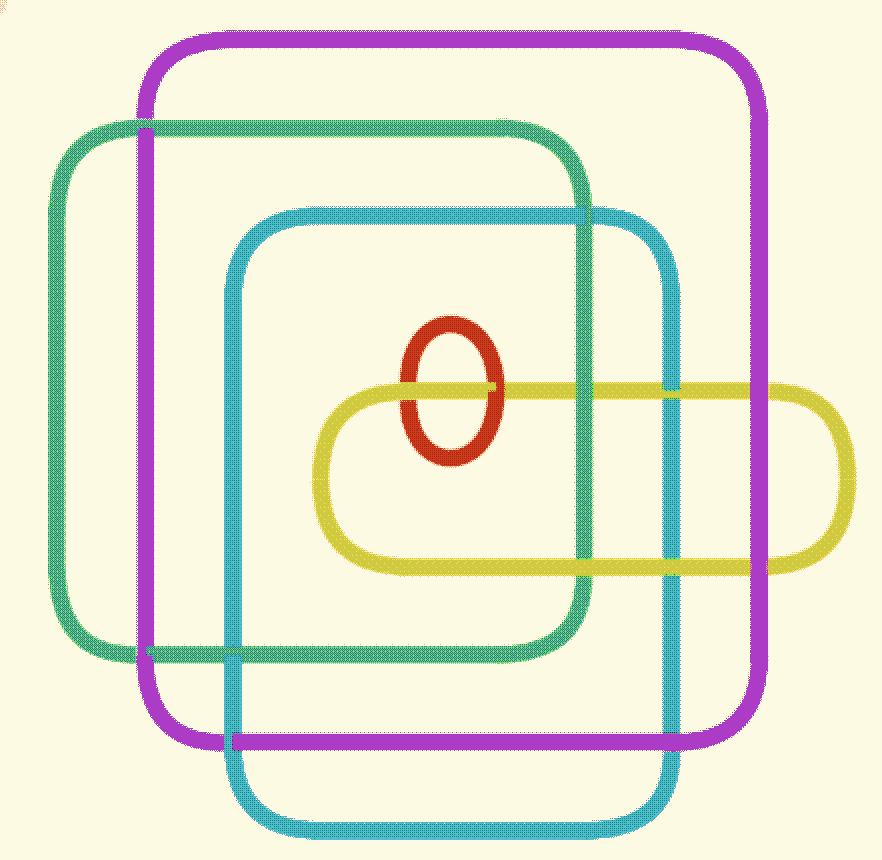
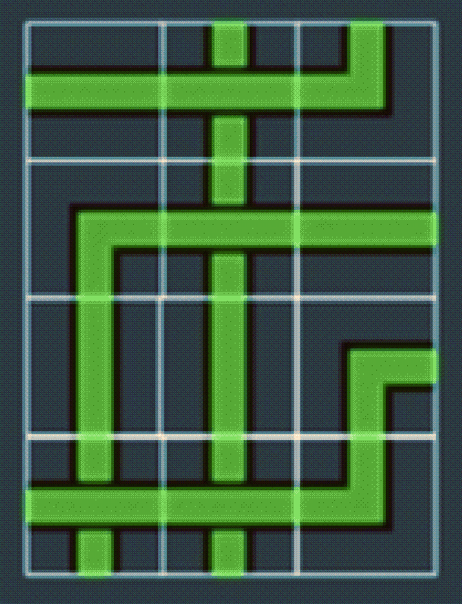

Proof of NP completness of the trivial graph problems using a topology based approach with braids and links.

I'm an undergraduate student at Purdue studying Computer Science and Math! Some of my interests include Quantum Computing, Quantum Physics, and I'm interested in topology as well! You can look through some of the projects I've worked on if you're interested, have fun!

Valid tile generation using Wave Function Collapse, solved using Quantum Approximate Optimization Algorithm